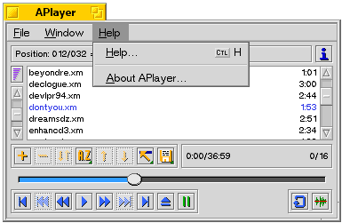

Shortcuts & key combinations
| APlayer knows following keys or key combinations: |
| ESC |
Closes active window, except for the main window. |
| |
|
| These can used in main window only: |
| F12 |
Selects a random module in the list and plays it. |
| DEL |
The same as the eject button. |
| Backspace |
Module loop on/off. |
| Insert |
The same as the play button. |
| Space |
Pause the playing module. |
| Cursor left |
Rewind. |
| Cursor right |
Fast forward. |
| Shift + Space |
Mute/Unmute. |
| Shift + Cursor left |
Load the previous module in the list. |
| Shift + Cursor right |
Load the next module in the list. |
| 0 - 9 |
Select sub-songs (if current module has subsongs). |
| + / - |
Increment / decrement sub-song selector by 10 if module has more than 10 sub-songs. |
Statusbar
Statusbar shows module position and progress in percent. It also tells elapsed or remaining time. You can change time mode by clicking time with mouse.
Mute / Unmute
|
This button can mute / unmute sound. |
Volume
|
This slider can be used to adjust sound volume. You can press buttons in it to set volume by small steps or just drag slider to position of you choice with mouse. |
Add module(s) to playlist
|
This button opens standard file dialog in which you can select new file which will be added to playlist.
If one or more modules are selected in playlist then modules will added before first selected module. Otherwise modules will be added to the end of playlist. |
Remove module(s) from playlist
|
This button removes all selected modules from playlist. |
Swap module positions
|
This button swaps positions of two selected modules in playlist. |
Sort / Shuffle playlist
This button shows menu:
Sort Ascending:
Sorts playlist in ascending order (A-Z). |
Sort Descending:
Sorts playlist in descending order (Z-A). |
Shuffle:
Shuffles playlist. If no module is playing, APlayer will
start to play the first module. If a module is playing, the playing module
will be in top of the list. |
Move upwards
|
This button moves all selected modules upwards in playlist. If you hold down shift while pressing the button all selected modules will be moved to the top of the list. |
Move downwards
|
This button moves all selected modules downwards in playlist. If you hold down shift while pressing the button all selected modules will be moved to the bottom of the list. |
Select
This button shows menu:
Select All:
Selects all modules in playlist. |
Deselect All:
Deselects all selections. |
Playlist options
This button shows menu:
Load List:
Loads new playlist. Clears playlist before adding new modules. APlayer can load following playlist types:
-APlayer
-WinAmp
-CL-Amp
-SoundPlayIs also possible to drag&drop playlist directly to APlayer main window. |
Append List:
Loads new playlist. APlayer will append new module(s) before the first selected module. If
none is selected, it will append to the end of the list. |
Save List:
Saves current playlist. |
Playing time
This area shows time information of all selected modules in playlist and total playing time of entire playlist.
NOTE: Since playing time is calculated when module is loaded, total playing time may change as you load new modules.
Module count
This area shows number of currently selected modules and total number of modules in playlist.
Position Slider
This slider can be used to set module position.
You can drag slider with mouse and if main window of APlayer is active you can also use left and right cursor keys on keyboard to change module position.
NOTE: Slider is enabled only if current module format supports position seeking.
Playlist
You can drag & drop modules straight to playlist. Playlist will be cleared before new files are added. It is possible to drag'n'drop around in the list. Select all the modules you want, and then drag them around.
You can also use control keys to change drag & drop behaviour:
CTRL + Drag & Drop:
Insert. Inserts modules to playlist. Playlist is not cleared before inserting. |
CTRL + SHIFT + Drag & Drop:
Append. Add modules to end of existing playlist. Playlist is not cleared before appending. |
Load previous module
|
This button loads previous module from playlist. If you press it within two seconds after module started to play it loads previous module from playlist, otherwise it starts module from beginning. |
Start previous sub-song
|
This button starts previous sub-song. It is enabled only if current module has sub-songs. |
Rewind
|
This button works like rewind in CD-players. |
Play
|
This button opens filedialog where you can select files for playlist. Playlist will be cleared before adding new modules. |
Fast Forward
|
This button works like fast forward in CD-players. |
Start next sub-song
|
This button starts next sub-song. It is enabled only if current module has sub-songs. |
Load next module
|
This button loads next module from playlist. |
Eject
|
This button stops module playing and sets module position to beginning. If you press it twice, it will clear playlist. |
Pause
|
This button sets pause on / off. |
Repeat
|
This button sets repeat on / off. If repeat is on then currently playing module will loop forever. |
File menu
File menu shows following options:
Open:
Adds new files to playlist. Playlist will be cleared before adding new modules. |
Quit:
Quits APlayer. |
Window menu
NOTE: You can access add-on settings directly under Players, Agents and Clients menu items or just use Settings window
Window menu shows following options:
Help menu

Help menu shows following options:
Help:
This help file. |
About APlayer:
General info about APlayer. |

|